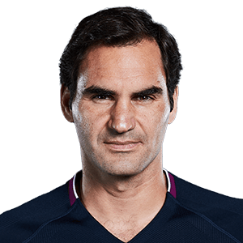
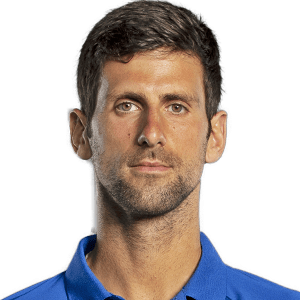

The Big Three

The Big Three is a common tennis term referring to Roger Federer, Rafael Nadal, and Novak Djokovic. From the 2003 Wimbledon Championships up to and including the 2021 Australian Open, the trio have dominated men's singles, winning 58 of the 70 (83%) Grand Slam titles, with Federer and Nadal accounting for 20 each, and Djokovic 18. They won 18 consecutive majors from the 2005 French Open to Wimbledon in 2009, and 13 consecutive majors from the 2017 Australian Open to the 2020 Australian Open. The Big 3 were ATP Year-End No. 1 for every year from 2004 to 2020 except for 2016 (16 of 17). They have occupied the top three positions of the year-end singles ATP Rankings eight times, in 2007, 2008, 2009, 2010, 2011, 2014, 2018 and 2019.
Roger Federer
Roger Federer born 8 August 1981 is a Swiss tennis player, widely regarded to be the best tennis player of all time. In a remarkable career, he has won 20 Grand Slam titles and reached the finals of all major grand slams at least five times. During the period 2004 to 2008, he was world number one for a record 237 consecutive weeks. He has won the Stefan Edberg Sportsmanship award (voted by players) a record thirteen times. He also supports several charities and is an ambassador for UNICEF.
Rafael Nadal

Rafael Nadal, in full Rafael Nadal Parera, byname Rafa Nadal, (born June 3, 1986, Manacor, Mallorca, Spain), Spanish tennis player who emerged in the early 21st century as one of the game’s leading competitors, especially noted for his performance on clay. He won a record 13 career French Open championships, and his total of 20 men’s singles Grand Slam titles was tied for the most in tennis history. Nadal is the only left-handed member of the Big Three. Representing Spain, he has an Olympic gold medal in both singles and doubles
Novak Djokovic
Serbian tennis player Novak Djokovic is the current World No. 1 in men’s singles tennis by the ‘Association of Tennis Professionals’ (ATP). He is considered one of the greatest professional tennis players ever. He has held the top position for 270 weeks at a stretch. Djokovic has an enviable achievement of winning 17 ‘Grand Slam’ singles titles that include an all-time record of eight ‘Australian Open’ titles, five ‘Wimbledon’ titles, three ‘US Open’ titles, and a ‘French Open’ title. He is also the only player to complete the career Golden Masters